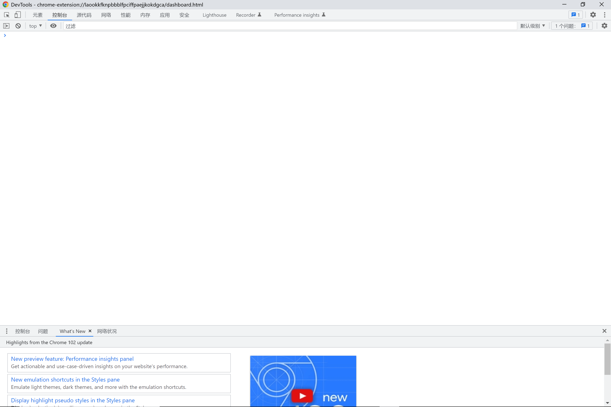

一、JavaScript学习总结1.1 环境配置1.2 基本语法1.3 操作符1.4 语句1.5 函数1.6 对象1.7 数组1.8 链式语法1.9 闭包二、TypeScript学习总结2.1 TypeScript简介2.2 let和const2.3 解构2.4 函数2.5 类2.6 模块三、总结四、参考链接
JavaScript 是互联网上最流行的脚本语言，这门语言可用于 HTML 和 web，更可广泛用于服务器、PC、笔记本电脑、平板电脑和智能手机等设备。
和其他语言一样，JavaScript作为编程语言，需要环境来运行。对于JavaScript语言，可以在浏览器中运行，打开浏览器，点击键盘上的F12按钮，或者右键点击检查，接下来点击控制台或console，可以看到下面的窗口，在窗口中输入JavaScript命名便可以执行。

如果想要在WebStorm或者VSCode中运行需要下载Node.js解释执行JavaScript程序。Node.js下载地址如下：
下载后安装，建议将安装目录添加到环境变量中。
标识符
JavaScript是一个大小写敏感的语言，对于标识符（变量、函数、属性的名字，或者函数的参数）的使用，需要注意：
- 第一个字符只能是字母、下划线（ _ ）或美元符号（ $ ）之一；
- 其他字符可以是字母、下划线、美元符号或数字；
- 标识符采用 驼峰大小写格式，也就是第一个字母小写，剩下的每个单词的首字母大写，如
getNameById
注释
//开头/*开头，*/结尾语句
语句后的分号可以添加，也可以不添加，建议添加
保留字
在 JavaScript 中，一些标识符是保留关键字，不能用作变量名或函数名，或者说是 JavaScript 语言内部预备使用的一组名字（或称为命令）。这些名字目前还没有具体的用途，是为 JavaScript 升级版本预留备用的，建议用户不要使用。
ECMAScript 3 将 Java 所有关键字都列为保留字，而 ECMAScript 5 规定较为灵活，例如：
JavaScript 预定义了很多全局变量和函数，用户也应该避免使用它们。
不同的 JavaScript 运行环境都会预定义一些全局变量和函数，上表列出的仅针对 Web 浏览器运行环境。
无论是在严格模式下还是在非严格模式下，都不要在定义变量名、函数名或者属性名时使用上面列举出的保留字。
保留关键字信息可以参考：JavaScript 保留关键字 | 菜鸟教程 (runoob.com)
变量
变量是用于存储信息的"容器"。JavaScript变量是松散类型的，可以保存任何类型的数据。定义变量时需要用var，该变量在C#语言中也有。var操作符定义的变量可以用来保存任何值，例如：
var message = 'Hi, JavaScript';
console.log(message);
message = 100;
console.log(message);
和C#语法类似， var 操作符定义的变量将成为定义该变量的作用域中的局部变量。也就是说，如果在函数中使用
var 定义一个变量，那么这个变量在函数退出后就会被销毁。
虽然省略
var操作符可以定义全局变量，但这也不是我们推荐的做法。因为在局部作用域中定义的全局变量很难维护。
设置全局变量有三种方法：
参考链接：
JavaScript 作用域 | 菜鸟教程 (runoob.com)
javascript如何设置全局变量-js教程-PHP中文网
操作符和C语言的操作符类似，主要有以下几类：
++ --&& || ！+ - * / %<> <=>= == === != !==? := += -+ *= /= %=参考链接：
JavaScript 运算符 | 菜鸟教程 (runoob.com)
和其他高级语言一样，JavaScript也有条件语句，switch语句，for循环和while循环。
条件语句
和大部分高级语言的条件判断句类似，可以以C++的语法来写JavaScript的条件语句。
参考链接：
JavaScript If…Else 语句 | 菜鸟教程 (runoob.com)
switch语句
同上，参考C++的语法。
参考链接：
JavaScript switch 语句 | 菜鸟教程 (runoob.com)
for循环
这里重点介绍JavaScript中的for循环，JavaScript的for循环既有C++中的语法，也有python的for循环的身影，还有类似C#的高级遍历，可以阅读如下代码块进行学习：
xxxxxxxxxx
var colors = ['red', 'green', 'blue', 'brown']; //colors是一个数组
//传统遍历（基本不用了）
for(var i=0;i<colors.length;i++){
console.log(colors[i]);
}
//for-in，专注下标
for(var c in colors){
console.log(colors[c]);
}
//for-of，专注元素
for(var c of colors){
console.log(c);
}
//高级遍历
colors.forEach(c => console.log(c));
var other = colors.map(c => c + 'X');//map不仅遍历，还返回另一个数组
console.log(other);
while循环
while循环同上条件语句和switch语句，参考C++语法即可。
函数（ function）对任何语言来说都是一个核心的概念。通过函数可以封装任意多条语句，而且可以在任何地方、任何时候调用执行。
JavaScript的函数语句和C/C++的语法类似，需要注意的是函数的前面不用数据类型修饰函数返回参数，而是直接使用function作为前缀。对于需要返回参数的函数，可以直接在函数中添加return语句。还有一点不同的是，如果需要输入参数，函数名称后面的括号中不需要填写数据类型。
xxxxxxxxxx
function sum(num1, num2) {
return num1 + num2;
}
JavaScript的语法非常松散，有如下几点需要注意：
- JavaScript函数不介意传递进来多少个参数，也不在乎传进来参数是什么数据类型。
- 如果在 JavaScript中定义了两个名字相同的函数，则该名字只属于后定义的函数。
- JavaScript函数可以自带参数
对象 Object 是JavaScript 中使用最多的一个类型。我们常将数据和方法封装在对象中，类似于C++的结构体。
创建对象有两种方式，如下：
xxxxxxxxxx
//方法一
//方式一
var person = new Object();//生成空对象
person.name = Bob;
person.sayName = function(){
console.log(this.name);
};
//方式二
var person = {
name: 'Bob',
sayName: function(){
console.log(this.name);
}
};
//方法二
function createPerson(name){
var o = new Object();
o.name = name;
o.sayName = function(){
console.log(this.name);
};
return 0;
}
参考链接：
JavaScript 对象 | 菜鸟教程 (runoob.com)
JavaScript的数组可以参考C++中的容器（例如Vector容器），python中的数组或者是C#中的List，总体语法风格都比较相似。
参考链接：
JavaScript Array（数组）对象 | 菜鸟教程 (runoob.com)
链式语法已变得非常流行。实际上这是一种非常容易实现的模式。基本上，你只需要让每个函数返回
this代表包含该函数的对象，这样其他函数就可以立即被调用。如下：
xxxxxxxxxx
//链式语法
var bird = {//定义对象字面量
catapult: function() {
console.log( 'Yippeeeeee!' );
return this;//返回bird对象自身
},
destroy: function() {
console.log( "That'll teach you... you dirty pig!" );
return this;
}
};
bird.catapult().destroy();//destroy()后还可以再链接吗？
JavaScript 变量可以是局部变量或全局变量。私有变量可以用到闭包。闭包就是函数的局部变量集合，只是这些局部变量在函数返回后会继续存在。闭包就是就是函数的“堆栈”在函数返回后并不释放，我们也可以理解为这些函数堆栈并不在栈上分配而是在堆上分配。
当在一个函数内定义另外一个函数就会产生闭包
关于TypeScript，可以在官网上查到相关信息
TypeScript中文网 · TypeScript——JavaScript的超集 (tslang.cn)
TypeScript是JavaScript类型的超集，它可以编译成纯JavaScript。TypeScript可以在任何浏览器、任何计算机和任何操作系统上运行，并且是开源的。
百度百科上也给出了相关解释：
TypeScript 起源于使用JavaScript开发的大型项目 。由于JavaScript语言本身的局限性，难以胜任和维护大型项目开发。因此微软开发了TypeScript ，使得其能够胜任开发大型项目。
TypeScript教程参考链接：
TypeScript 教程 | 菜鸟教程 (runoob.com)
TS配置
安装好NodeJS后，以管理员身份运行CMD或者PowerShell，使用npm -g install ts-node typescript命令进行全局安装
在VSCode中开发，建议安装插件：TSLint、TypeScript Hero等插件。
TypeScript的文件后缀为
.ts
TypeScript不使用var，使用let或const申明变量，且作用域为块级及{}为界
xxxxxxxxxx
let lang: string = 'TypeScript';//如果省略类型说明，TS也可进行自动推断
let age: number = 89;
const pi: number = 3.14159;//pi以后不可改变，类似常量
参考链接：
TypeScript 变量声明 | 菜鸟教程 (runoob.com)
将对象、数组中的元素拆分到指定变量中，以方便使用
xxxxxxxxxx
//解构数组
let input = [89, 64, 2018, 10];
let [first, second] = input;//注意使用[]
console.log(first); // 89
console.log(second); // 64
let [one, others] = input; //剩余变量
console.log(others);
//展开
let newArr = [89, others, 18];
console.log(newArr);
//解构对象
let o = {
a: "foo",
b: 12,
c: "bar"
};
let {a, b} = o;//注意使用{}，且变量名需与对象中道属性名一致
console.log(a, b);
参考链接：
TypeScript的函数定义要比JavaScript严格，需要指定函数中输入参数的类型，也可以让参数可以选择，还可以添加默认参数，如果不知道需要多少个参数，还可以使用剩余参数。在TypeScript的函数箭头函数（类似于lambda表达式），可以简化函数定义、解决this问题。如下：
xxxxxxxxxx
//命名函数，有完整的参数和返回类型。可以不用，TS将自动进行类型推断但推荐使用！
function add(x: number, y: number): number {
return x + y;
}
//匿名函数
let myAdd = function(x: number, y: number): number { return x + y; };
//可选参数，必须放在必要参数后
function greeting(firstName: string, lastName?: string) {
if(lastName) {
return `Hello ${firstName} ${lastName}!`;
}
return `Hello ${firstName}!`;
}
//默认参数，不必在必要参数后
function greeting(firstName: string, lastName = 'Wang') {
return `Hello ${firstName} ${lastName}!`;
}
//剩余参数，会被当做个数不限的可选参数。可以一个都没有，也可以有任意个
function greeting(firstName: string, restName: string[]) {
return `Hello ${firstName} ${restName.join(' ')}!`;
}
类的语法结构和所有面向对象的编程语言如C++、Java、Python等类似，这里不做过多介绍。
参考链接：
TypeScript 类 | 菜鸟教程 (runoob.com)
对于大型的项目，我们需要使用模块进行管理。每个 .ts 文件就是一个模块，通过 export 来对外部模块暴露元素，通过 import
来引入模块（类似于Java和python导入模块的语法）。
参考链接：
TypeScript 模块 | 菜鸟教程 (runoob.com)
学习JavaScript和TypeScript的过程和其他编程语言一样，大都是按照语法、数据类型...顺序依次进行下去。JavaScript和TypeScript作为脚本语言，它的优势也非常明显：上手快，不需要像C/C++、Java、C#等语言写很多“壳”。在掌握一门编程语言后，会发现编程语言之间的共同性，通过这些共同性可以让我们快速的学习一门语言。对于JavaScript和TypeScript的更深入学习，可以在相关教程网站上找到资料，也可以在视频网站（如哔哩哔哩 (゜-゜)つロ 干杯~-bilibili）找到相关学习视频。